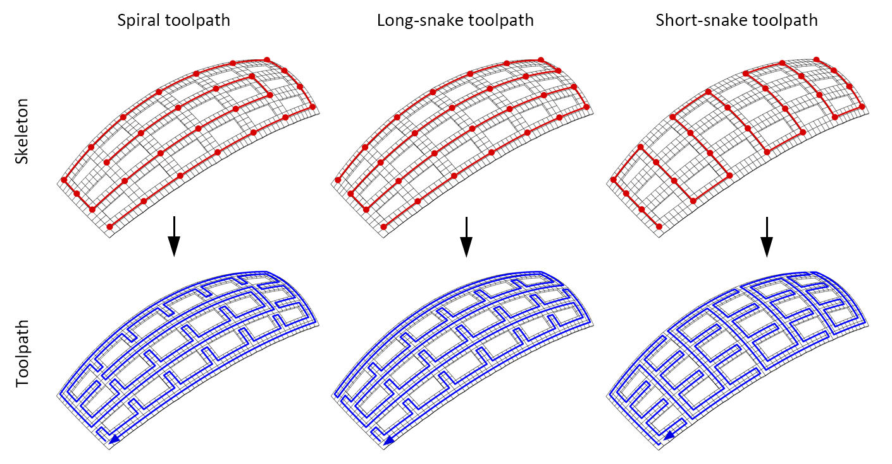
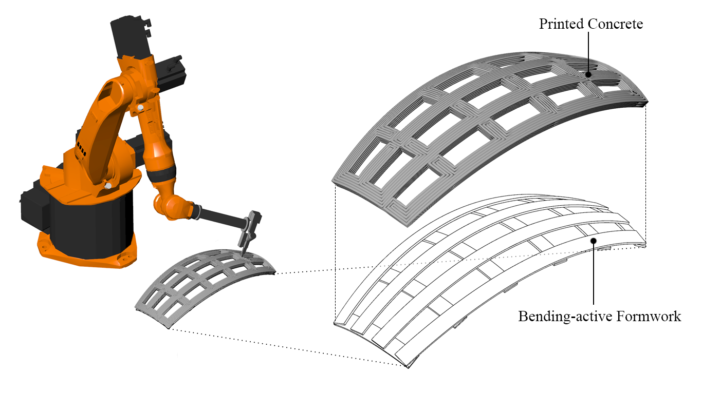
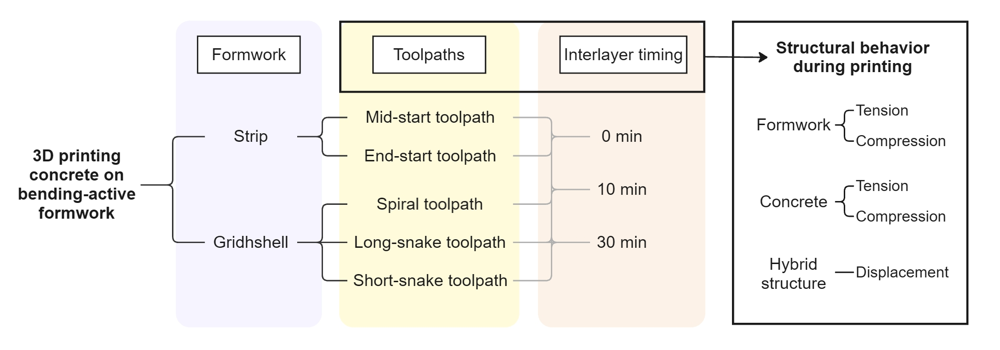
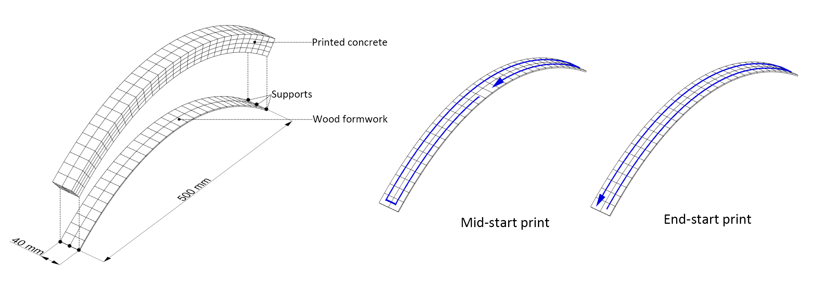
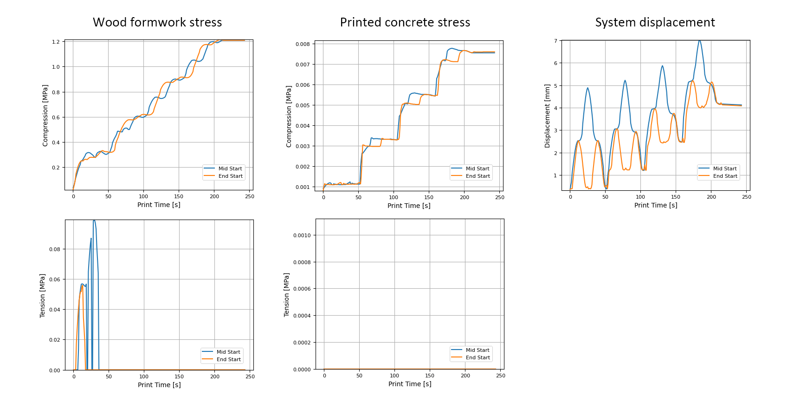
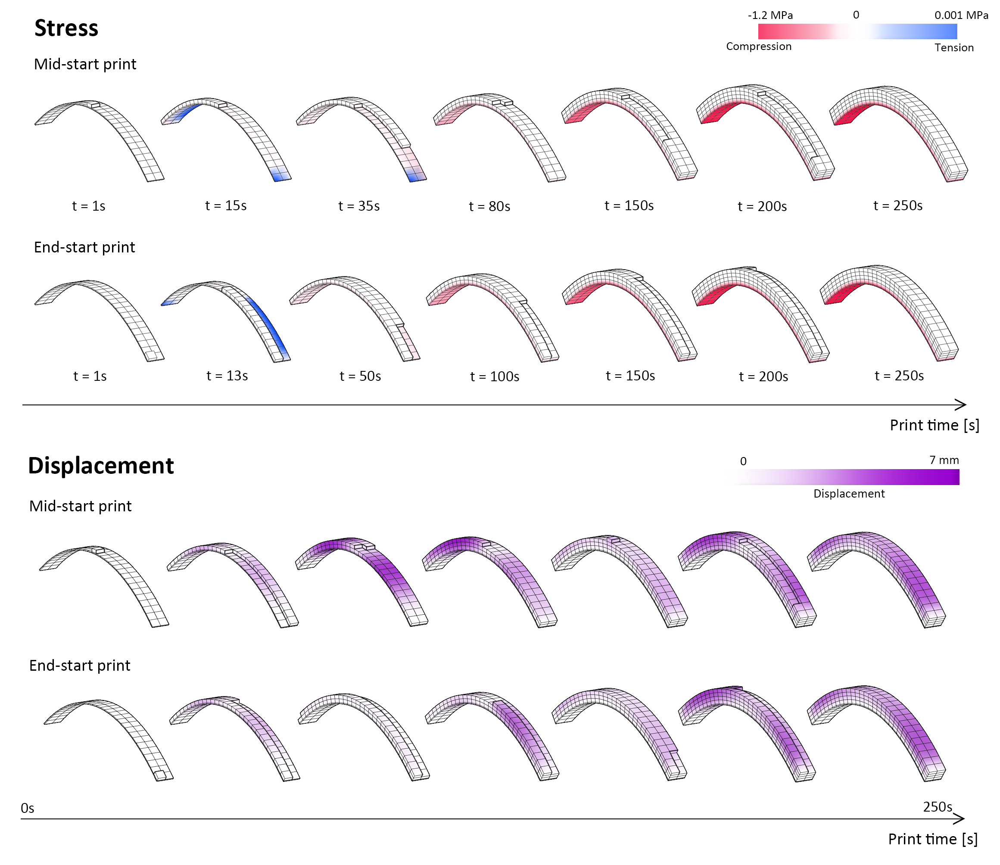
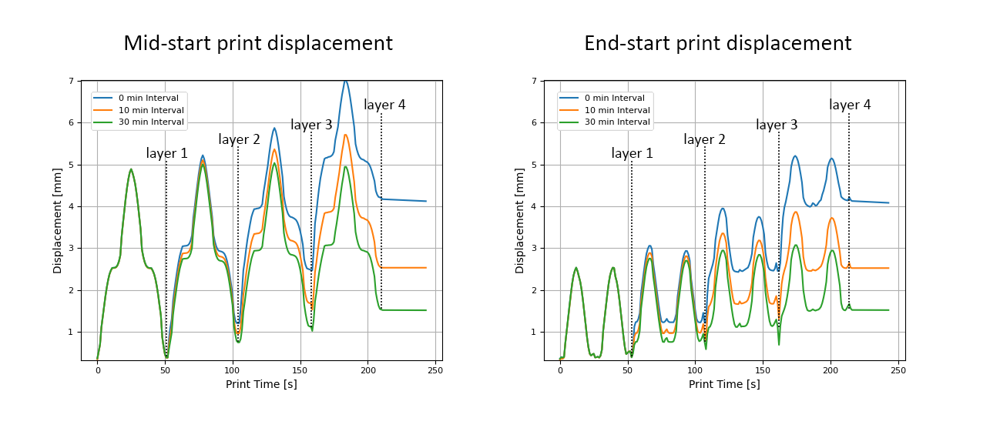
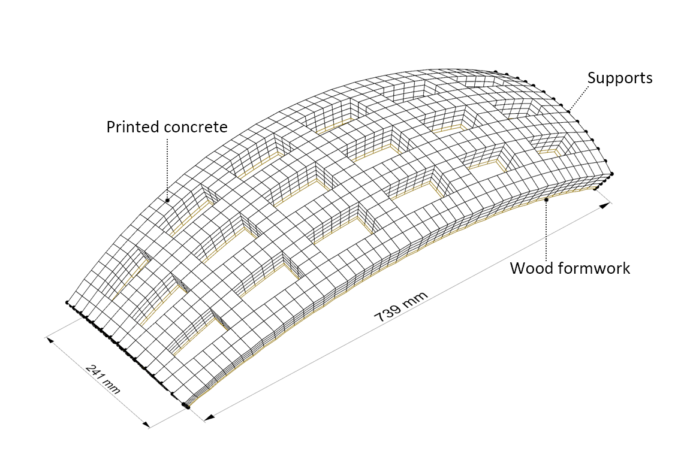
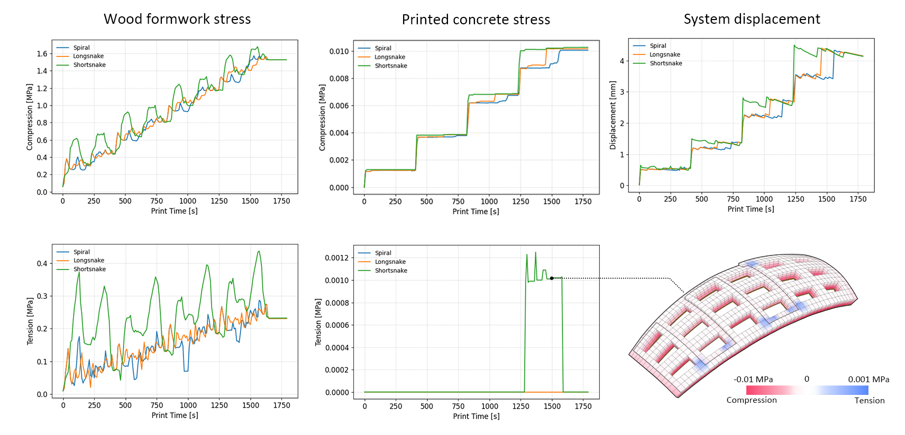
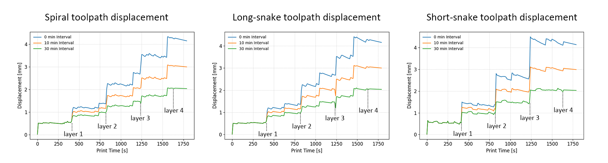

Conformal 3D printing on bending-active formwork - structural implications of toolpath strategies and interlayer timing
This study investigates the structural behavior of conformal 3D printing on bending-active formwork, a method aimed at enabling the construction of large-span concrete structures without conventional molds. We developed a voxel-based simulation framework to model the layered deposition of concrete over flexible timber formwork, incorporating time-dependent material properties. The study evaluates different toolpath strategies and interlayer time intervals on both linear strips and doubly curved gridshells to assess their impact on the printing process. Results show that toolpaths aligned with the global span of the structure help reduce formwork buckling during printing and promote more uniform stress distribution. In contrast, toolpaths oriented perpendicular to the span tend to cause greater deformation. Introducing a short interlayer time interval improves structural stability during printing, while previous studies suggest that longer delays may compromise interlayer bonding. This work lays the foundation for sustainable and material-efficient 3D printing methods for curved, long-span structures by providing practical guidance on toolpath design and process control.









Tech & Architecture
✏️ Stack, tools, and interesting technical decisions.